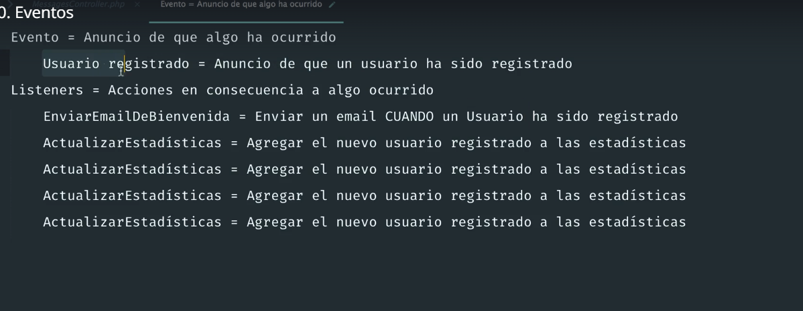
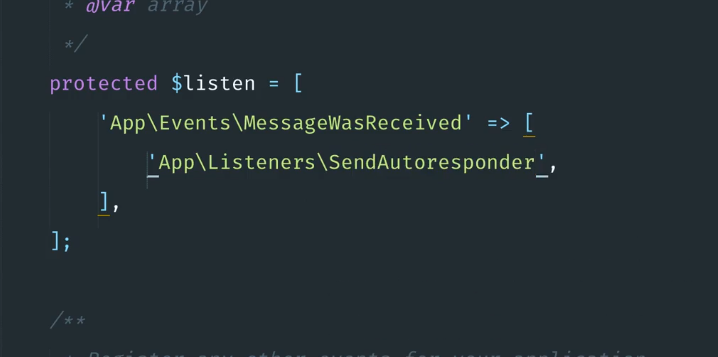
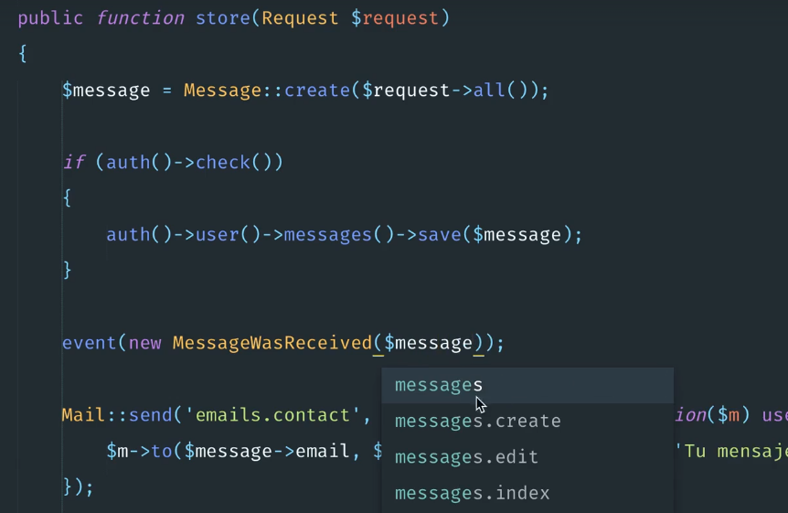
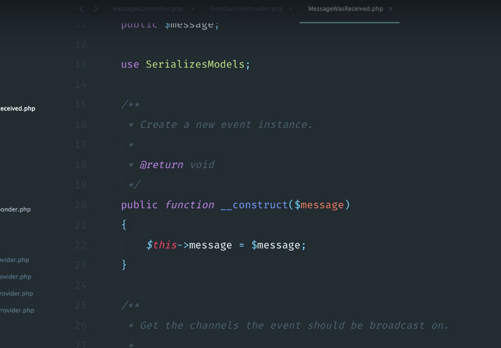

Eventos. 



Comando para crear el evento y el listener

php artisan event:generate   ->checar con php artisan

Cuando se crea un evento se tiene que configurar el listener 



NOTA NO OLVIDAR IMPORTAR EL EVENTO

use Illuminate\Http\MessageWasReceived;

Cuando se ponen los dos y ejecutas el comando  php artisan event:generate

se genera tanto el evento y el listener que corresponden.

Como se solicita.



Ojo se les pasa la variable $message 



poner la propiedad en publica -> protected $message a  public $message

Video 70


